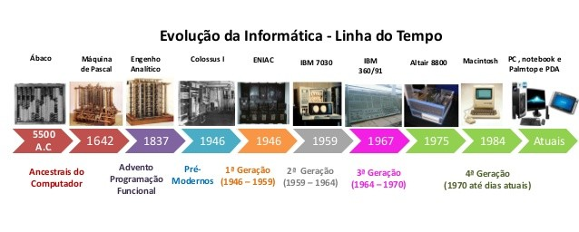

Resumo sobre a evolução das máquinas tecnológicas e suas gerações
A evolução dos computadores é um processo contínuo que se deu a séculos atrás, com a criação de máquinas que realizavam cálculos, até os computadores modernos que utilizam inteligência artificial e computação em nuvem; com isso, a evolução da tecnologia transformou a sociedade e a forma como produzimos, nos comunicamos e vivemos.
- Primeira Geração (1940-1956): Caracterizada pelo uso de válvulas eletrônicas (tubos de vácuo) como componentes principais. Os computadores eram grandes, lentos e consumiam muita energia. Como exemplo: o ENIAC.
- Segunda Geração (1956-1963): A invenção do transistor revolucionou a tecnologia, tornando os computadores menores, mais rápidos e mais confiáveis. O uso de linguagens de programação de alto nível também surgiu nesta geração.
- Terceira Geração (1964-1971): A introdução dos circuitos integrados, que agrupam múltiplos transistores em um único chip, permitiu a miniaturização dos computadores e o aumento da velocidade de processamento.
- Quarta Geração (1971-1980): O microprocessador, um circuito integrado que contém a unidade central de processamento (CPU) em um único chip, impulsionou a criação dos computadores pessoais (PCs) e a popularização da computação.
- Quinta Geração (1980-atual): Esta geração é marcada pelo desenvolvimento da inteligência artificial (IA), aprendizado de máquina, computação em nuvem e dispositivos móveis. A busca por maior poder de processamento, menor consumo de energia e soluções mais compactas continua.